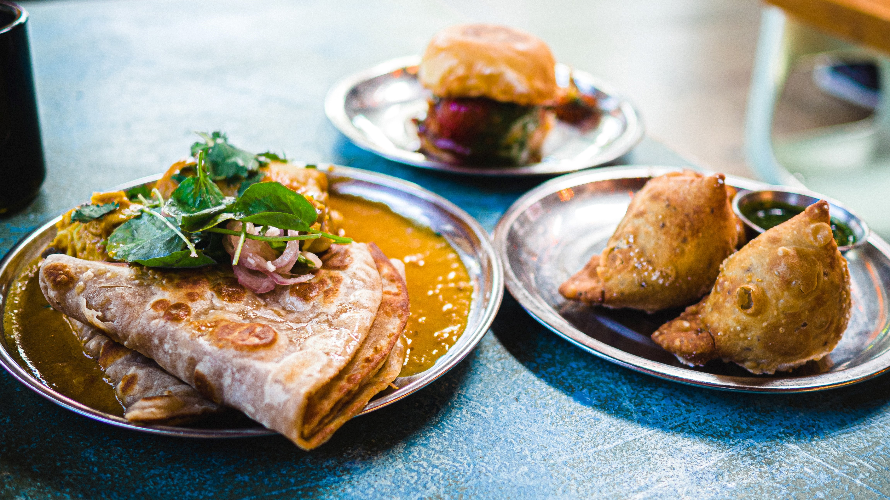

Indian cuisine consists of a variety of regional and traditional cuisines native to the Indian subcontinent. Given the diversity in soil, climate, culture, ethnic groups, and occupations, these cuisines vary substantially and use locally available spices, herbs, vegetables, and fruits. Indian food is also heavily influenced by religion, in particular Hinduism, cultural choices and traditions. Centuries of Islamic rule, particularly by the Mughals, also introduced dishes like samosa and pilaf. Historical events such as invasions, trade relations, and colonialism have played a role in introducing certain foods to this country. The Columbian discovery of the New World brought a number of new vegetables and fruit to India. A number of these such as potatoes, tomatoes, chillies, peanuts, and guava have become staples in many regions of India. Indian cuisine has shaped the history of international relations; the spice trade between India and Europe was the primary catalyst for Europe's Age of Discovery. Spices were bought from India and traded around Europe and Asia. Indian cuisine has influenced other cuisines across the world, especially those from Europe (especially Britain), the Middle East, Southern African, East Africa, Southeast Asia, North America, Mauritius, Fiji, Oceania, and the Caribbean.
Ingredients:
2 medium russet potatoes, cut into 2"-long sticks
1 medium head of cauliflower, cut into small florets
5 Tbsp. extra-virgin olive oil, divided
1 tsp. cumin seeds
½ tsp. ground turmeric
1 small onion, finely chopped
1 Tbsp. thinly sliced ginger
Pinch of asafetida (optional, but really great)
Pinch of red chili powder
1 tsp. (or more) kosher salt
1 Tbsp. (or more) fresh lime juice
½ cup chopped cilantro leaves with tender stems
Preparation:
Step 1:
Preheat oven to 400°. Line a rimmed baking sheet with foil. Toss potatoes and cauliflower with 3 Tbsp. oil on prepared sheet. Spread in an even layer and roast, tossing once halfway through, until cauliflower and potatoes are browned and slightly crisped, about 30 minutes. Let cool.
Step 2:
Meanwhile, heat remaining 2 Tbsp. oil in a large skillet over medium-high until it begins to shimmer. Add cumin and cook, stirring frequently, until they turn a medium shade of brown, about 1 minute. Reduce heat to medium and swirl in turmeric. Add onion and cook, stirring frequently, until translucent, 4–6 minutes. Add ginger, asafetida (if using), and chili powder and cook, stirring, until heated through and well combined, about 1 minute longer.
Step 3:
Stir in roasted potatoes and cauliflower, including any charred bits from the foil, and gently mix (don’t overmix, or the cauliflower will fall apart). Add salt and cook, tossing occasionally, until potatoes and cauliflower are tender (but not soggy!), 5–6 minutes. Remove from heat and add lime juice. Taste and add more lime juice or salt, if needed.
Step 4:
Transfer potatoes and cauliflower to a platter. Top with cilantro.
Ingredients:
Potato (diced) - 1
Cauliflower Florets - 1
Onion (finely chopped) - 1
Tomato (finely chopped) - 2
Garlic (finely chopped) - 5
Green Chilli (finely chopped) - 1
Oil - 2
Cumin Seeds - ½
Fennel Seeds - ¼
Turmeric Powder - ¼
Red Chilli Powder - ½
Coriander Powder - ½
Garam Masala Powder - ½
Salt - ¾
Water - 1 ¾
Coriander Leaves - 1
Cooking Instructions:
1. Heat oil in a Kadai, add cumin seeds, fennel seeds and let it splutter.
2. Add onion, garlic, green chilli and saute till it turns golden brown.
3. Add tomatoes, turmeric powder, red chilli powder, coriander powder, salt, saute till the tomatoes are mushy and the masalas are cooked.
4. Add potato, cauliflower florets and mix well.
5. Add 1 ¾ Cups of water cover and cook for 10 mins.
6. Open the lid, add garam masala powder, mix well and simmer for 2 mins.
7. Add the coriander leaves, mix and remove from the heat.
8. Serve hot with Chapati/roti.
INGREDIENTS:
1 small cauliflower
2 potatoes, peeled cut into 4cm cubes
2 tbsp mustard oil
1 tsp mustard seeds
1 tsp cumin seeds
1 onion, finely chopped
2 cloves garlic, finely chopped
200g/½ tin tomatoes
1 tbsp ginger, grated
1 tsp salt
1 tsp turmeric
1 chilli, finely chopped
1 tsp dried fenugreek
1 tsp garam masala
Handful chopped fresh coriander
Ingredients:
Cauliflower(chopped and washed)-250 gm
Potato(chopped and washed)-2
Onion(chopped)-1 (large)
Garlic(chopped)-8 to 10
Green chilli(chopped)-1
Cooking oil-4 tbsp
Turmeric powder-1/2 tsp
Red chilli powder-1 tsp
Cumin seeds-1/ 2tsp
Salt to taste
Coriander leaves-1/3 cup
Ingredients:
for dosa :
rice 1 cup
urad dal/ black gram / mashkalai dal half cup
fenugreek seeds half tsp
water
salt
For Potato Masala:
oil 1 tbls
mustard seed 1/4th tsp
cumin seeds 1/4th tsp
curry leaves 3 to 4 or dried half tsp (optional)
Hing / asafetida 1 pinch
salt
boiled potato 2 cups
pinch of turmeric
onion 2 tbls
coriander leaves
for green coconut chutney :
coconut half cup
water
salt
green chili
coriander 1 tbls
oil 1 tbls
mustard seeds 1/4th tsp
dry red chili 1
curry leaves 3 to 4 or dried half tsp
Ingredients:
1 Cup White Lentils (Urad Dal)
3 cups Parboiled Rice
Salt
Oil
Method:
- Soak the urad dal and rice separately for at least 6 - 7 Hrs
- Grind the urad dal with minimal water in a mixer to make a smooth paste and rice into a coarse paste
- Mix the two and let it ferment for about 6 - 7 hrs
- Add salt and mix it well
- Grind the batter into a fine smooth paste
- Heat a pan before frying the dosa and once its hot bring it off the flame
- Spread the batter on the pan using a spoon in a circular motion
- Put it back on the flame and cook it on high flame
- After the batter dries out a little brush some oil on it
- Cook evenly and the dosa is ready to be served
Ingredients:
1 Cup White Lentils (Urad Dal)
3 cups Parboiled Rice
Salt
Oil
Method:
- Soak the urad dal and rice separately for at least 6 - 7 Hrs
- Grind the urad dal with minimal water in a mixer to make a smooth paste and rice into a coarse paste
- Mix the two and let it ferment for about 6 - 7 hrs
- Add salt and mix it well
- Grind the batter into a fine smooth paste
- Heat a pan before frying the dosa and once its hot bring it off the flame
- Spread the batter on the pan using a spoon in a circular motion
- Put it back on the flame and cook it on high flame
- After the batter dries out a little brush some oil on it
- Cook evenly and the dosa is ready to be served
Ingredients:
Masala Dosa
For Batter / Dosa Pindi - 2 cups rice
½ cup urad Dal
⅓ cup Chana Dal
1 tsp Methi Seeds / Fenugreek
For aloo masala
Oil - 1 tbsp
Mustard Seeds - 1 tsp
Curry leaves - 2 sprig
Ginger - ½ inch
Green chilli - 2-3
Onion - sliced
Turmeric - ½ tsp
Boiled Potatoes - 5
Red Chilli Powder - 1 tsp
Salt - to taste
Coriander - 1 tbsp
After Fermentation, to cook
Salt - as per taste
Oil - to roast dosas
Ingredients:
6-8 Garlic cloves
4-5 Green Chillies
3-4 Potatoes, Boiled, Mashed
¼ Cup Oil
1 tbsp Mustard Seeds
¼ Tsp Asafoetida
2 Sprig Curry Leaves
½ Tsp Turmeric Powder
Salt To Taste
2 Tbsp Coriander Leaves, Chopped
For Batter
1 Cup Gram Flour
½ Tsp Turmeric Powder
¼ Tsp Red Chilli Powder
Salt To Taste
For Chilli Fry
5-6 Green Chillies,Slit
Oil For Frying
For Vada Pav Chutney
2 Tbsp Oil
½ Cup Peanut
4-5 Garlic cloves
½ Cup Fried Besan Batter crumbs
2 Tbsp Red Chilli Powder
Salt To Taste
Oil For Frying
Process:
● Heat a pan, add oil, mustard seeds, asafoetida, curry leaves, garlic green chilli crushed, turmeric powder, potatoes and mix well.
● Now add salt, coriander leaves and mix it well. Keep it aside to cool.
For batter
● In a mixing bowl, add gram flour, turmeric powder, red chilli powder, salt to taste and required water as per the consistency and mix well.
For vada pav
● Heat oil and green chilli , garlic cloves and fry them well.
● Heat a pan, add oil, peanut, garlic cloves, fried besan batter crumbs, red chilli powder, salt to taste mix well and transfer it to a grinder and coarsely grind it.
● Now make a medium size ball of potato mixture and deep into the besan batter and fry them till golden brown.
● Serve with fried chilli and peanut chutney.
INGREDIENTS:
For Vada Pav (वडा पाव)
Pav (पाव) - 6
Potato ((आलू) - 3 medium (boiled)
Garm flour (बेसन) - 1 cup or 150 gm
Salt (नमक) - 2 tsp or as per taste
Red Chili Powder (लाल मिर्च पाउडर) - 1/2 tsp
Coriander Powder (धनिया पाउडर) - 1 tsp
Turmeric (हल्दी) - 1 tsp
Mustard seeds (राई) - 1 tsp
Curry Leaves (कड़ी पत्ता) - 1 tsp
Dry Mango Powder (सूखे आम पाउडर) - 1 tsp
GingerGarlic Green Chilli Paste (अदरक लहसुन मिर्च का पेस्ट) - 1 tsp
Hing (हींग) - 2 pinch
Lemon Juice (नींबू का रस) - 1 tbsp
Oil (तेल) - to fry
Water (पानी) - 1/2 glass
Vada Pav - Sukhi Chutney
Dry Coconut (सूखा नारियल) - 1/2 cup or 50 gm (grated)
Dry Red Chili (सूखा लाल मिर्च ) - 4-5
Garlic clove (लहसुन) - 8
Groudnut (मूंगफली) - 1/2 cup
Ingredients:
Pav-10
Boiled potato-6
Gram flour(besan)-150 gm
Curry leaves-8 to 10
Green chilli-4
Ginger-2 inch
Garlic cloves-8 to 10
Coriander leaves-1/3 cup
Asafoetida(hing)-1/4 tsp
Mustard seeds-1/3 tsp
Cumin seeds-1/3 tsp
Turmeric powder-1/3 tsp
Red chilli powder-1/3 tsp
Baking soda-1/4 tsp(optional)
Salt to taste
Cooking oil for frying
Green chutney-2 tbsp
Peanuts garlic chutney-1 tbsp
Green chilli(slit)-4.
Vada pav or WADA pav is the common man’s food in Mumbai and is a popular street food snack across whole Maharashtra. It is basically a savory slider of fried mashed potato fritters stuffed in a dinner roll.
Ingredients:-
2 bunches of Spinach (washed and blanched)
300 gms Paneer
¼ cup tomato chopped
1 tsp. Turmeric
3 red chillies dried whole
Salt as required
3 tbsp. Garlic chopped
1 tsp. Cumin seeds
5 tbsp. Ghee
½ cup red onions chopped
Method:-
- Drain and grind Spinach leaves to a fine puree.
- Heat ghee in a pan and add cumin seeds, dried red chillies, garlic and saute until golden brown.
- Add the onions, salt and saute until light golden brown in colour.
- Then add turmeric powder, tomatoes, garam masala and stir fry on high flame for 2-3 minutes.
- Now add the Spinach puree and water.
- Boil on high flame for 3-4 minutes.
- Add paneer to the gravy and stir well.
Palak Paneer is ready to eat!
Ingredients :
- Paneer 200gms cut into cubes
- Curd 2 tbsp
- Cream 2 tbsp
- Whole garam masala:
1 black cardamom (elaichi)
4 green cardamom (elaichi)
4 Cloves (lavang)
Two 1 inch Cinnamon(dalchini)
- Spice powders :
Cumin powder 1 tsp
Coriander powder 1 tsp
Turmeric powder 1/2 tsp
Red Chilli powder 1 tsp
Garam masala powder ½ tsp
Kasuri methi 1 tsp
- Salt to taste
- Green chillis - 1 finely chopped
For the paste :
- Spinach (Palak) one small bunch, roughly chopped
- Coriander leaves one bunch, roughly chopped
- Green chillies- 2 roughly chopped
- Onions sliced-1 medium
- Tomatoes, small - 2
- Ginger -1 inch piece
- Garlic- 7 cloves
Preparation:
- Add 1 tbsp oil & add onions.Fry till the onion is just soft
- Add the ginger garlic & green chillies & fry for a minute
- Now add the tomato & cook till soft.
- Add the spinach and cook till soft & add the coriander leaves.
- Just mix it well & switch off
- Cool this & blend it into a smooth paste
Process :
- Heat oil & add the whole garam masalas. Flavour the oil & remove
- Now add the finely chopped green chillies & then the green paste. Cook for 3-4 mins
- Switch off the heat & add the beaten curd & the cream. Mix well & cook on low flame for few minutes till oil separates
- Now add the powders other than garam masala & kasuri methi. Also add the salt
- Once oil separates add the paneer pieces. After 2 mins add the garam Masala powder. Mix well
- At the end add the crushed kasuri methi , mix well & simmer till done
Preparation time: 10 minutes
Cooking time 20 minutes
Serves: 2
Course: Main
Ingredients:
2 bunches, Palak leaves, cleaned, (blanched then in ice cold water )
1 inches ginger, grated
2-3 garlic pods, roughly chopped
2 green chili, chopped
For Palak Paneer
1 tbsp Ghee
1 tbsp oil
¼ tsp cumin seeds
3-4 cloves
1 bay leaf
Pinch of asafoetida
2-3 small onion, chopped
2-3 garlic pods, chopped
1 medium Tomatoes, chopped
1 tsp coriander seeds, roasted and crushed
1/2 tbsp. kasoori methi, roasted and crushed
½ tsp Turmeric powder
1 tsp Red chilli powder
2-3 leaves of spinach, chopped
2 bunches Spinach, blanched and puree
½ cup hot water
250-300 gm Paneer, cut into cubes
1 tbsp Fresh Cream
Salt as per taste
Garnish
Ginger, julienne
Fresh cream
Process:
• In pot blanch spinach leaves in boiling water for 2-3 minutes. Remove and transfer
immediately into ice cold water.
• Now into blender add ginger, garlic and make paste then add cooked palak and make
smooth paste
• For palak paneer heat ghee in pan and add bay leaf, cumin seeds, asafoetida. Stir for a
minute until fragrance goes off.
• Now add onion and garlic, saute until they turn translucence. Add tomatoes and stir till they
turn soft. Add turmeric, red chilli, kasoori methi, crushed coriander seeds and some coriander powder and mix well. Add some chopped palak leaves.
• Now add prepared palak puree, hot water, adjust salt and give a nice stir.
• Transfer paneer cubes, sprinkle garam masala and allow it to cook for another a minute.
• A finish with fresh cream and fold it into gravy.
• Garnish with ginger julienne and fresh cream.
Ingredients:
Palak Leaves - 1 Bunch
To Make Masala
Butter - 1 Tbsp
Cumin Seeds - 1 Tsp
Onion - 1 No. Finely Chopped
Green Chili - 2 Nos Finely Chopped
Garlic - 4 Cloves
Ginger
Tomato - 2 nos chopped
To Make Palak Paneer
Butter - 1 Tbsp
Turmeric Powder - 1/4 Tsp
Kashmiri Chili Powder - 1 Tsp
Coriander Powder - 1 Tsp
Cumin Powder - 1 Tsp
Garam Masala - 1 Tsp
Water - 1 Cup
Salt - 1 Tsp
Paneer - 200 Gms
Method:
Boil a pot of water
Add the palak leaves to the boiling water
Let it boil for 2 to 3 mins and strain the palak leaves and keep it aside
Heat a pan with some butter, add cumin seeds and roast them
Add onions, green chilies,ginger, garlic and saute them
Add tomatoes and cook well
Cool the mixture and add it to a mixer jar
Add the palak leaves along with the onion, tomato mixture and grind everything together
Heat the same pan with some butter, add all the spice powders and saute
Add the ground mixture, add some water, salt and let it come to a boil
After about 5 mins, add the paneer pieces and close and cook it for another 5 mins
Garnish it with fresh cream and serve hot.
Ingredients:
Suji / Rava / Semolina - 1 1/2 cup
Normal Dahi / Plain Yogurt - 1 1/2 cup
Salt - 1 tsp
Water - to adjust consistency
Eno - 1 1/2 tsp OR Baking Soda/Meetha soda - 3/4 tsp
Oil - to grease idli tray
Ingredients
1 cup parboiled rice (ukada chawal), soaked for 8-10 hours
½ cup split skinless black gram (dhuli urad dal), soaked for 8-10 hours with ½ tsp fenugreek seeds (methi dana)
Salt to taste
Sesame oil for greasing
Coconut chutney to serve
Sambhar to serve
Method
1. In a blender jar, add par boiled rice and ½ cup water and blend to a smooth paste. Set aside.
2. Transfer the soaked split skinless black gram and fenugreek seeds in another blender jar and add ½ cup water and blend till smooth.
3. Combine the ground rice mixture and the split skinless gram mixture into a large bowl. Cover and let it ferment for 8-10 hours.
4. Add salt in the fermented mixture and mix well.
5. Heat sufficient water in a steamer. Lightly grease each idli mould with sesame oil.
6. Pour a portion of the batter into each cavity of the idli mould and tap slightly to level the top.
7. Steam the idlis for 10-15 minutes. Take them off the heat.
8. Transfer on a serving plate, serve hot with coconut chutney and sambhar.
INGREDIENTS:
Rava/sooji-1 cup
Curd- 3/4 cup
Baking soda-1/3 tsp
Mustard seeds-1 tsp
Split black gram(urad dal)- 1tbsp
Split chickpeas( chana dal)-1 tbs
Asafoetida (hing)-1/4 tsp
Cashew-10
Curry leaves
Cooking oil-1 to 2 tbsp
Ingredients -
URAD DAL - 1 GLASS
CHAWAL / RICE - 3 GLASS
WATER - 2 1/2 GLASS TO MAKE BATTER
METHI DANE / FENUGREEK SEEDS - 2 TSP
NAMAK / SALT - 1 TSP
BAKING POWDER - 3 TSP OR BAKING SODA - 1 1/2 TSP
OIL FOR GREASING
Important tips -
1) you can reduce the qty by half for everything if you wnat to make less qty of idli.
2) dal and chawal should always be in 1:3
3) soak everything atleast for 6-8 hours.
4) grind dal as fine as possible
5) grind the rice coarsely
6) keep aside the mixture for fermentation, time may vary acc to the climate
7) always stire the mixture in only one direction
8) you can skip baking powder, but adding it will give you much spongy idli
9) using a cotton cloth in the steamer to steam idli, results in more spongy idli, use a clean cloth, considring all the hygiene.
10) to demould the idli always fir wet it with some water and then demould it, it will be much easier to do so....
Sabut urad dal 250 grams (whoe black gram lentil)
Water to rinse & soak
Water to cook – 4-5 litres + as required
For the tadka:
Desi Ghee - 4tbsp
Ginger garlic paste - 2 tbsp
Deghi/ kashmiri red chilli powder - 3 tbsp
Fresh tomato puree - 500 grams
Salt to taste
White butter - 4 tbsp
A pinch of homemade garam masala (optional)
Toasted kasuri methi - 1/2 tsp
White butter - 3 tbsp
Fresh cream - 1/2 cup
Method:
• Wash & rinse the dal really well. You will have to scrub the dal between your palms so that all the impurities are discarded & also the dal will slightly loose its color. You will have to wash the dal for 3-4 times, I washed it for 3 times.
• Once the dal is washed & the water is clear, add enough water to soak & soak the dal for a minimum of 4-5 hours or overnight.
• Once the dal is soaked, drain the excess water & now add the dal into a large vessel.
• Add enough wate & bring the water to a boil.
• Now lower the flame & cook the dal for 60-90 minutes. Stir in intervals but with very light hands & not in very short intervals.
• I do not add the salt early into the dal & prefer to add it in the tadka & towards the end.
• Scum will start to form on the top, remove & discard.
• Once the dal is cooked well, you should be able to crush the dal between your fingers very easily & you should feel the starchy goodness squeezing out of the dal.
• You can continue to cook the dal until you prep the tadka or set it aside.
• You can also cook the dal in a pressure cooker for 4-5 whistles & you would require lesser water as per your pressure cooker requirements.
For the tadka:
• Add desi ghee into a vessel, now add in the ginger garlic paste. Cook on low flame for 2-3 minutes. Now add in the red chilli powder & cook om low flame for a minute. Remember to not burn the chilli. If you feel the heat is too high, just sprinkle some water to avoid the burning of the chilli powder.
• Now add in the fresh tomato puree, salt to taste & cook on medium to high flame until the tomatoes are cooked really well & the ghee is released.
• Now set the dal again on a flame & add the tadka to it.
• Mix well & now add the white butter, you can add unsalted butter as well, or use normal butter & adjust the salt accordingly.
• Now cook the dal on low flame for 30-45 minutes, longer the better. Keep stirring in intervals.
• Use a whisk or a wooden mathani to mash the dal to a consistency you like. The more you mash, the creamier would be the texture.
• After about 45 minutes, add toasted kasuri methi powder, a pinch of garam masala which is optional but do add because we did not use any whole spices. Mix well.
• Now lower the flame to the minimum & finish with white butter and the fresh cream.
• Mix gently & cook for 4-5 minutes.
• The dal is ready to be served.
• Remember, this dal tends to thicken very quickly so whenever you feel that the dal is very thick, add HOT water, remember the water should be hot, even when you cook this dal in advance the dal will be really thick if it gets cold, reheat, adjust the consistency with hot water, bring to a boil before you serve.
Cheers!
Ingredients:
160 gms/1cup Urad Dal
¼cup or 45gms Rajma (chitra)
4-5 cups Water
100gms/ ½ cup Butter
12 gms/ 1tbsp Ginger paste
12 gms/1 tbsp Garlic paste
½ tbsp Garlic chopped
12gms/ 1½ tbsp Kashmiri chilli powder
to taste Salt
Fresh tomato puree - 350 gms/ 1 ½ cup
TEMPERING:
1 tbsp Oil
½ tbsp Garlic chopped
Butter(optional) - 2 tbsp
Dried methi leaves - a generous pinch
175 ml/ ¾ cup Cream
Ingredients:
1 cup whole black lentils (soaked overnight)
50 gms red kidney beans (soaked overnight)
1/2 cup onions, chopped
1 cup fresh tomato crush
1 tbsp ginger garlic
1 green chili
1 tsp freshly roasted coriander crushed
1/2 tsp cumin seeds
1 tsp turmeric powder
1 tbsp red chili powder
1/2 tsp garam masala powder
2 tbsp ghee
2 tbsp refined oil
2 cups water + more to adjust desired consistency
salt as required
Corriander sprigs
Method:
- Soak the Kidney beans and Black lentils in water for 4 to 5 hours or overnight.
- Pressure cook the soaked Kidney beans and Black lentils for 12 to 20 whistles and mash it.
- Heat a pan, add ghee and add some oil, once it gets hot add cumin seeds, Ginger & Garlic paste, and cook until it gets golden in color.
- Add chopped onions, Chillies and allow it to cook till it gets translucent
- Add Tomatoes, Red Chilly powder, Turmeric powder, Salt to taste, Garam Masala powder and mix it well.
- Add the cooked and mashed dal into the pan and cook it.
The delicious and traditional Punjabi Mah Ki Dal is ready to serve with steamed rice, roti, or naan.
Dal Makhani Ingredients:
Cooking Dal
- 1 cup of black gram / काली उरद दाल
- Red Kidney Beans / राजमा
- Salt
- Water
Tadka
- 2 tbsp ghee
- 2 chopped onions
- 2 tbsp ginger garlic paste
- 3-4 tomato puree
- 1/2 tsp salt
- 1/2 tsp red chilli powder
- coriander leaves
- water
- 2 tsp coriander powder
- 1 tsp cumin powder
- 1 tsp garam masala
- Butter
- 1/2 tsp red chilli powder
- Fresh Cream
Method
- In a pressure cooker add black gram, red kidney beans, salt, and water & keep it for 2-3 whistles.
- In a pan add ghee and onions and cook it until the onions turn brown.
- Add ginger-garlic paste, tomato puree, salt, red chili powder, and coriander leaves.
- Check if the dal is cooked and add it to the tadka and cook it for 7-8 minutes.
- In other pan add butter, red chili powder and pour it over dal and add coriander and fresh cream.
Dal Makhani is ready to be served!
BUTTER CHICKEN
Preparation time: 10 minutes
Cooking time: 30 minutes
Serves: 2
Ingredients
For the Gravy
4 large Tomatoes, cut into half
2-3 large Onions, sliced
3-4 Garlic pods
1 inch-Ginger, sliced
1 tbsp Degi Mirch
5-6 Cloves
1 inch-Cinnamon Stick
3 Bay Leaves
5-6 Black Peppercorns
2 Green Cardamoms
2 tbsp Butter
Salt to taste
For Butter Chicken
2 tbsp Butter
1 tbsp Red Chilli powder
1 tsp Coriander powder
Prepared Gravy
3 tbsp Fresh Cream
1 tsp Honey
Cooked Tandoori Chicken, shredded
1-2 drops Kewra Water
1 tbsp Dried Fenugreek Leaves, toasted & crushed
Burnt Charcoal
1 tsp Ghee
Fresh Cream
Coriander Sprig
Process
For the Base Gravy
• In a heavy bottom pan, add ½ cup water.
• Add tomatoes, onions, garlic, ginger, degi mirch and all the whole spices. Mix well.
• Add 1½ tsp butter, salt and mix well. Cover the cook for 15 minutes.
• Once the tomatoes are soft, with a hand blender, blend the gravy till smooth.
• Strain the gravy through a strainer.
For Butter Chicken
• In a pan, add butter and allow it to melt. Add red chilli powder and coriander powder, cook for a minute.
• Pour prepared gravy, mix well and cook for 2-3 minutes.
• Add fresh cream, honey, shredded tandoori chicken, mix well and cook for another 3-4 minutes.
• Add kewra water, dried fenugreek leaves and cook for 2 minutes.
• In a small metal bowl, add burnt charcoal and place it in the middle of the gravy.
• Pour ghee over charcoal and immediately cover with a lid, keep it 2-3 minutes for the smoky flavour. Once done, remove the charcoal bowl.
• Transfer the butter chicken in a serving bowl. Garnish with fresh cream and coriander sprig. Serve hot with roti or rice.
Ingredient
750 gms chicken, cut into 4 large pieces on the bone
8-10 bright red medium tomatoes
2 one-inch cinnamon sticks
8-10 cloves
8-10 green cardamoms
Salt to taste
3½ tsps Kashmiri red chilli powder
Juice of 1 lemon
1½ inch ginger
10-12 garlic cloves
2 green chillies
400 gms yogurt
2½ tbsps ginger garlic paste
½ tsp garam masala powder + to sprinkle
2 tbsps mustard oil
1 tbsp oil + to grease
3 tbsps butter
2 cups readymade tomato puree
1 tsp dried fenugreek leaves powder (kasoori methi)
2 tbsps honey
A few sprigs of fresh coriander leaves
3 tbsps fresh cream
Method
1. Roughly chop the tomatoes. Put them into a large mixer jar and grind to a puree.
2. Put the puree into a non-stick pan. Rinse the jar with a little water and add to the pan, mix and let it cook.
3. Add cinnamon, cloves, green cardamoms, salt and 1½ tsps Kashmiri red chilli powder and mix well. Cover and cook till the mixture thickens slightly and all the flavours blend well.
4. Put a little water in the lower container of the Gas Oven Tandoor and keep it on heat.
5. Make a few incisions on either side of the chicken pieces and put them into a large bowl.
6. Add lemon juice, salt and 1 tsp Kashmiri red chilli powder and mix well and keep the bowl in the refrigerator for 10 minutes.
7. Roughly chop ginger, garlic and 1 green chilli and add to the pan. Cover and cook.
8. To make the 2nd marinade put yogurt into another large bowl. Add salt, 1 tsp Kashmiri red chilli powder, 2 tbsps freshly ground ginger-garlic paste and freshly ground garam masala powder and mix well.
9. Add the marinated chicken pieces to this bowl and mix well. Add mustard oil and mix well. Let it marinate in the refrigerator preferably for at least 4 hours.
10. Strain the tomato mixture into a third large bowl.
11. Lightly grease the upper container of the Gas Oven Tandoor. Keep the marinated chicken pieces on it, cover and cook.
12. Heat butter and 1 tbsp oil in another non-stick pan. Add ½ tbsp ginger-garlic paste and saute till fragrant. Add the strained tomato mixture, readymade tomato puree, dried fenugreek leaves powder and honey and mix well and cook.
13. When the chicken is almost done, baste the pieces with a little oil, cover and cook till the chicken is completely done.
14. Finely chop coriander leaves and 1 green chilli and add to the tomato gravy.
15. Cut the chicken into smaller pieces and add to the gravy. Add cream and mix well. Sprinkle a little garam masala powder and mix well.
16. Transfer into a serving bowl and serve hot with naan or tandoori roti.
Ingredients
For the chicken
300 gms Chicken breast boneless
1 tbsp Ginger garlic paste
1 tbsp Red chilli powder
Salt to taste
Oil to pan fry
For the gravy
500 gms roughly slit tomatoes
100 gms roughly cut onions
1 tbsp garlic paste
50 gms cashew
1 tsp kasoori methi
1/2 tsp garam masala
4 tbsp sugar
2 tbsp kashmiri chilli powder
5 tbsp butter
3 tbsp cream
2 tbsp malt vinegar / 1.5 tbsp White Vinegar
Salt to taste
Method
- Marinate the chicken with ginger paste, garlic paste, red chili powder, and salt and keep it aside for 15 to 20 minutes
- In a pan heat, some oil then fries the marinated chicken pieces in it, once done place it into a bowl.
- In the same pan add onion, oil, a spoonful of butter and once the onions are cooked add tomatoes and cashew nuts
- Add some water and garlic paste, salt, malt vinegar, sugar, garam masala powder, and chili powder. Evenly mix it and let it simmer for 15-20 minutes
- Churn the mixture into a fine puree.
- Strain it back into the same pan make sure there is minimal wastage.
- Add butter, cream, chicken and kasoori meethi and let it simmer for 5-7 minutes.
- Garnish it with cream and kasoori meethi
Butter Chicken is ready to be served!
Here is what you'll need!
For Marinade:
Boneless Chicken 500 gm
Salt to taste (1/4 tsp)
Garlic paste 1/2 tsp
Ginger paste 1/2 tsp
Plain yogurt 2 tbsp
Lime Juice 1 tsp
Mustard oil 1 tbsp
Kashmiri red chili powder 1 tsp
For gravy:
Diced onion 1 cup
Tomatoes 3-4 medium
Garlic paste 1 tsp
Ginger paste 1 tsp
Salt to taste
Sugar 2 tsp
Butter 4 tbsp (total)
Cooking oil 1 tbsp
Garam masala 1/2 tsp
Kashmiri red chili powder 1 tsp
Whole cream/ Whipping cream 1/4 cup
Cashew nuts 50 gm
(Took 45 min )
Enjoy
For tandoori chicken/Chicken tikka
Ingredients:
• Boneless chicken 1kg
• For marinade:
• Mustard oil 2 tbsp
• Kashmir Red chilli powder 2 tbsp
• Ginger garlic paste 2 tbsp
• Dhaniya (Coriander) powder 1 tbsp
• Jeera (cumin) powder 1 tsp
• Haldi (turmeric) powder ½ tsp
• Kasuri methi 1 tsp
• Amchur powder 1 tsp
• Black salt ½ tsp
• Garam masala 1 tsp
• Fresh mint 1 tbsp
• Fresh Coriander 1 tbsp
• Salt to taste
• Thick curd ½ cup
• Lemon juice 1 tbsp
• Live charcoal + ghee
• Oil for grilling
Methods:
Start by slicing the chicken breast, you can also use chicken thighs, as per your convenience, slice them thinly for even and faster cooking.
For marinade, take mixing bowl, add Mustard oil and Kashmiri Red chilli powder, mix well to bleed it's natural red colour. Further add the remaining marinade ingredients and mix well, now add the thinly sliced chicken, mix and coat well and keep it marinated for at-least an hour or two, but incase if you have time keep it for as long as you can for more juicy and flavourful chicken, please do not go beyond 20 hours in the fridge or else the chicken may spoil. Smoke the marinated chicken for 4-5 minutes to impart the smoky flavour. You can smoke the chicken at three stage that'll make difference of smoke flavour in the dish, one is, you can smoke at the marination stage where you'll get subtle flavour of smoke, second you can smoke after grilling and third you can smoke at final stage just before serving the dominant smoke flavour, the choice is yours.
Once it's been marinated and smoked, set a grill pan or any pan and grill the chicken on both the sides until golden brown in colour, you can also grill them oven for 5-6minutes at 220°C.
Once the chicken is grilled let them cool for a while and shred them in thin strips. Keep aside for later use.
For Makhani gravy base:
Ingredients:
• Oil 2 tbsp
• Jeera 1 TSP
• Onions 3-4 medium size (sliced)
• Garlic 10-15 cloves
• Ginger 1 inch (roughly Chopped)
• Green chillies 3-4 nos.
• Powdered spices:
• Kashmiri Red chilli powder 2 tbsp
• Dhaniya powder 1 tbsp
• Haldi powder ½ TSP
• Kasuri methi ½ tsp
• Whole kashmiri Red chillies 6-7 nos.
• Green cardamom 3-4 nos.
• Tomatoes 1 kg (roughly Chopped)
• Cashew nuts 1/3rd cup
• Coriander stems & roots a small handful
• Salt to taste
• Butter 2 tbsp
Methods:
Set a stock pot on medium heat, add oil, jeera and sliced onions, saute until onions are light golden brown.
Further, add garlic, Ginger, Green chillies, powdered spices, whole chillies and green cardamom, mix well and cook for a minute.
Now, add tomatoes, cashew nuts, coriander stems with its roots, salt to taste and butter, mix and cook on medium high heat for 5 minutes.
Further lower the heat, cover and cook for 25-30 minutes on medium low heat. Stir in intervals to avoid from sticking to the pan and burning.
As the tomatoes will leave their water, there is no need to add additional water, let them cook in their own water. If incase it starts to dry please add hot water as required to Cook the tomatoes, do not add too much of water.
Once the tomatoes are cooked, switch off the flame and let the mixture cool down to room temperature.
Once cooled, transfer the mixture to a grinding jar and grind to a fine puree, if you're in hurry you can add ice cubes and grind it.
Once the entire batch is pureed, strain the puree with a sieve and keep aside for later use.
For butter chicken final cooking:
Ingredients:
• Butter 2tbsp
• Oil 1 tsp
• Onions 1 medium size (chopped)
• Garlic 3 tbsp (chopped)
• Ginger 1 tbsp (chopped)
• Green chillies 2-3 nos. (Slit)
• Kashmiri Red chilli powder 1 tbsp
• Makhani gravy base
• Hot water as required
• Sugar/honey 1 TSP
• Grilled chicken shredded
• Kasuri methi ½ TSP (Toasted)
• Garam masala ½ TSP
• Salt to taste
• Butter 2 tbsp
• Fresh cream 5-6 tbsp
• Fresh coriander as required (Chopped)
Methods:
Set a wok on medium heat, add oil and butter, onions, Ginger, garlic and green chillies, saute until the onions are translucent.
Lower the heat and add kashmiri Red chilli powder, cook for about ½ minute to one minute, mix and further add the strained Makhani gravy base. You can add some hot water to adjust the consistency of the gravy.
Add sugar/honey, and cook for 15-20 minutes on medium flame, keep stirring in short intervals.
Now add the shredded grilled chicken, stir well, add some hot water if required to adjust the consistency.
Cook further for 5-6 minutes on medium flame.
Now add, Kasuri methi and garam masala, mix well and check for the seasoning, adjust Salt as required.
Lower the flame and add butter and fresh cream, stir well and cook for a minute, do not overcook.
Finish it with some freshly chopped coriander leaves.
Butter chicken is ready, serve hot with butter garlic paratha or naan or any Indian bread of your choice.
Ingredients:
For chicken marination:
Boneless chicken 500 grams
salt 1/2 tsp
red chili powder 1 tsp
coriander powder 1 tsp
cumin powder 1 tsp
lemon juice 2 tbsp
garlic ginger paste 1 tsp
yogurt 1/4 cup
For gravy:
butter 2 tbsp
chopped onion 1 medium size
garlic ginger paste 1 tbsp
green chili 3-4 pieces
cardamom 4-5 pieces
clove 2 pieces
cinnamon sticks 2 small pieces
bay leaf 1 piece
tomatoes 1/2 kg
red chili powder 1 tbsp
salt 1/2 tsp
water 1 cup
cashew nuts 15-16 pieces
oil 2 tbsp
sugar 1 tsp
fenugreek leaves 1 tsp
butter 1.5 tbsp
heavy cream 4 tbsp